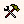

Eeldefineeritud elemendid
Sõltumata sõnastiku struktuurist, keeltest jms leidub alati teatud andmeid, mida alati on vaja talletada. Näiteks logielemendid nagu artikli koostaja ja koostamise aeg, kustutamise aeg jms. EELexi on sisse ehitatud elemendid, mis on uue sõnastiku skeemis kohe algusest peale sees. (NB! Selleks, et sõnastiku sisu edukalt failist importida, peavad selleski sisalduma ja osade puhul olema täidetud need elemendid!)
Automaatselt tekkivad elemendid ja atribuudid
Alljärgneva kohta võid vaadata veel
Sõnastiku sisu import ja
Artikli tööriistad.
xmlLang - keele lühend (täitub sõnaartikli lisandudes ise)
x:O - sorteerimisväärtus (täitub ise)
x:G - artikli GUID, vt lähemalt nt
http://en.wikipedia.org/wiki/Guid (täitub ise,
kasutatakse meil nt artikli leidmisel otsingutulemuste nimekirjast, artikli salvestamisel ja kustutamisel)
x:K - artikli koostaja (EELexi kasutajanimi, kes lisas uue artikli) (täitub ise)
x:KA - koostamise aeg (täitub ise)
x:KL - koostamise lõpp - koostaja teatab selle abil, et tema töö on lõpetatud; tekib, kui toimetaja valib Artikli tööriistadest  Lisa koostamise lõpu märge.
x:T - artikli viimane toimetaja (täitub ise)
x:TA - viimase toimetamise aeg (täitub ise)
x:TL - toimetamise lõpp - tekib, kui valida Artikli tööriistade nupust Lisa toimetamise lõpu märge.
x:PT - peatoimetaja (täitub ise, kui lisatakse peatoimetamise märge)
x:PTA - peatoimetamise aeg - tekib Artikli tööriistade nupust Lisa peatoimetamise märge abil.
x:X - artikli kustutaja (täitub kustutamisel ise)
x:XA - kustutamise aeg (täitub kustutamisel ise).
Lisaks neile on veel mugav võimalus lisada artiklile kommentaare (mis on mitme toimetaja puhul omavahelise suhtlemise vahendiks): kommentaari grupp x:KOM/x:komg/ ja elemendid temas:
x:kom - kommentaari tekst (täidab kasutaja)
x:kaut - kommentaari autor (täitub ise)
x:kaeg - kommentaari aeg (täitub ise).
Morfoloogiaplokis (x:mfp) tehtud muutuse järel ja märkuse (x:mrk) lisamisel tekivad ja täituvad automaatselt:
x:aT - toimetaja (ehk muutuse tegija või märkuse lisaja kasutajanimi) (täitub ise)
x:aTA - toimetamise aeg (täitub ise).